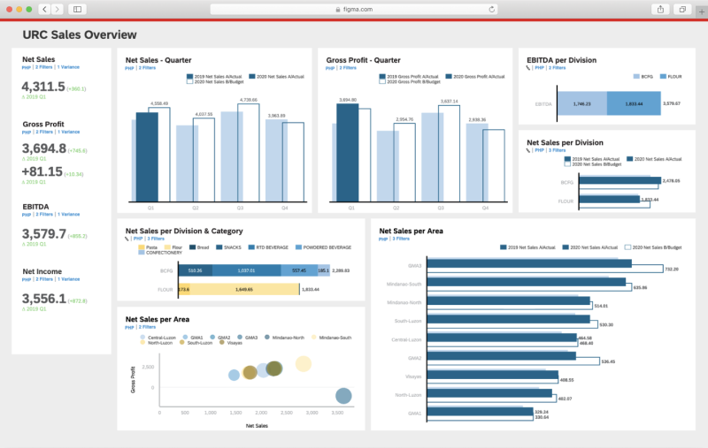
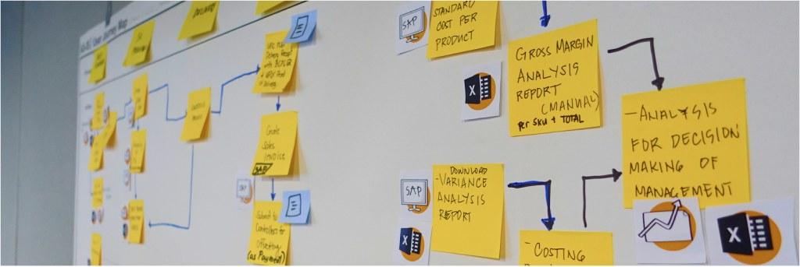
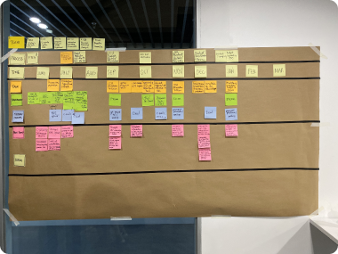
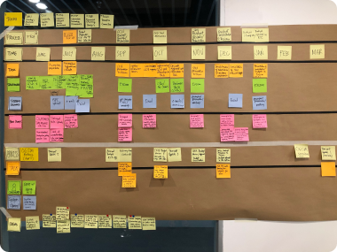
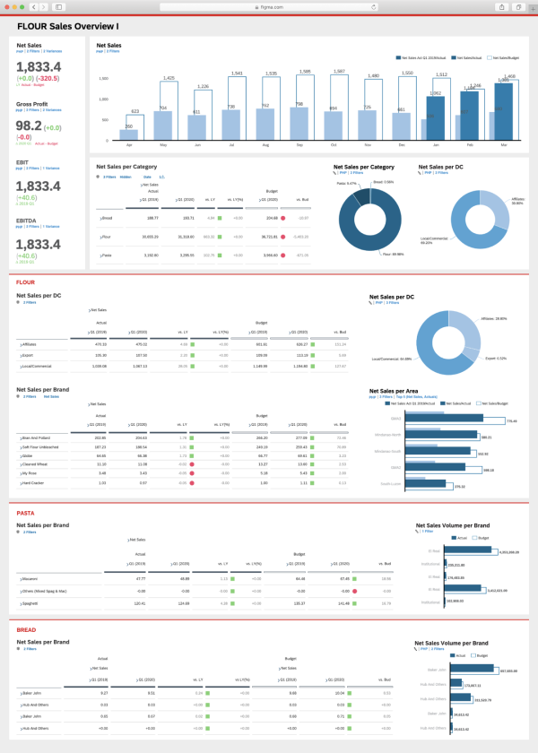
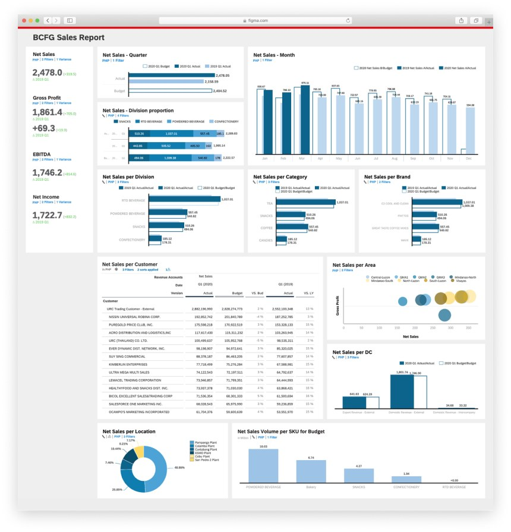

JG Summit, one of the largest Filipino conglomerates, struggled to integrate production and sales data for its planning. As senior UX designer, I took the work from exploration and research through to dashboard design.

Manual Excel budgeting and forecasting caused human errors, inaccurate data and slow reporting, keeping finance professionals stuck in operational tasks. Executives needed timelier decisions with better visibility.
I facilitated two Explore workshops — for URC's Branded Consumer Food Group and its packaging division — to find high-value planning use cases, build journey maps per persona, map stakeholders and prioritize the top problems.

Before the Discover workshop, I interviewed finance stakeholders across the holding company and business units with role-specific questionnaires.
Common needs: a unified view for budget consolidation, standardized planning across units, better forecasting and what-if simulation — and an end to Excel reporting that took over three weeks.
In co-creation sessions, stakeholders mapped current and ideal processes and voted on the most impactful ideas: profit and loss planning, consolidation, and reporting and dashboards.


The application starts with data input, moves through five-year planning, and ends with dashboards shared automatically with decision-makers — no separate report creation. Financial planners, general managers, CEOs and CFOs each enter at their level.
Financial elements for each business unit side by side. Every chart is interactive, so users drill down without leaving the page.


I learned how production, sales and budget data are interconnected across an enterprise, and how much data accuracy and timeliness matter.
Repurposing financial data for different users also made me think about how terms like gross profit and EBITDA shape UI design.
“This is exactly what we expected. I want to see the PoC outcome realized as soon as possible to cover more tasks in our financial planning process.”